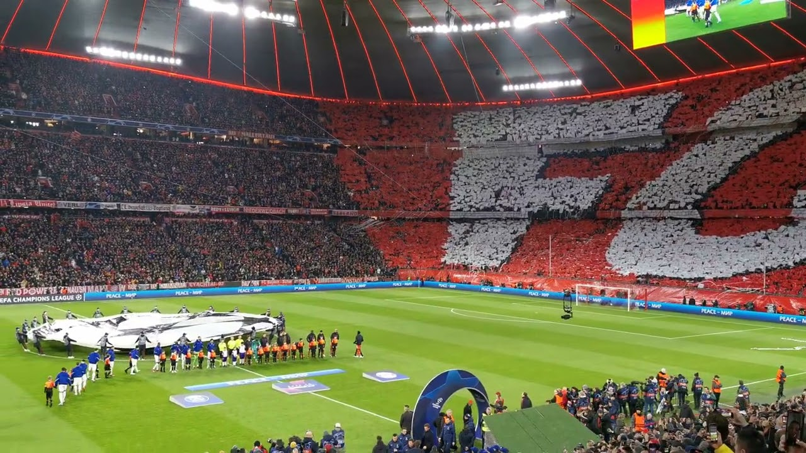

I'm studying at Lourdes University playing for the Men's soccer team. Moreover, I'm a Junior pursuing my Bachelor's degree within the next two years.
My favorite hobby is soccer.
Moments like these are the ones that make the sport special. My first stadium experience was very early in my life. It immediately got me and I started fully appreciating soccer. This is an actual game I attended in March 2023, when Bayern hosted Paris Saint-Germain in the UEFA Champions League.
When I first came to the country (I was born and raised in Germany), I was a little confused with it not beeing called football.
Anyways, I started playing and loving the sport at the age of 5 and nothing since changed.
My favorite website is the website of German soccer club "FC Bayern München".
Website - FC Bayern MünchenIn my opinion it's very intuitive to navigate through the website. Moreover as a fan you get a lot of interesting insight. Last but not least, the website very well reflects the colors of the brand "FC Bayern München".
Here's a fictious course schedule:
| Class Name | Class Day/Time | Class Description |
|---|---|---|
| History of Christianity | Monday, Wednesday 11:00am - 12:15pm |
Introduces to the beginning and progression of Christianity. |
| Professional Writing | Tuesday, Thursday 9:30am - 10:45am |
Teaches skills to be able to communicate in the business world. |
| Nutrition | Tuesday, Thursday 11:00am - 12:15pm |
Teaches knowledge about macro and micro nut- rients and more. |